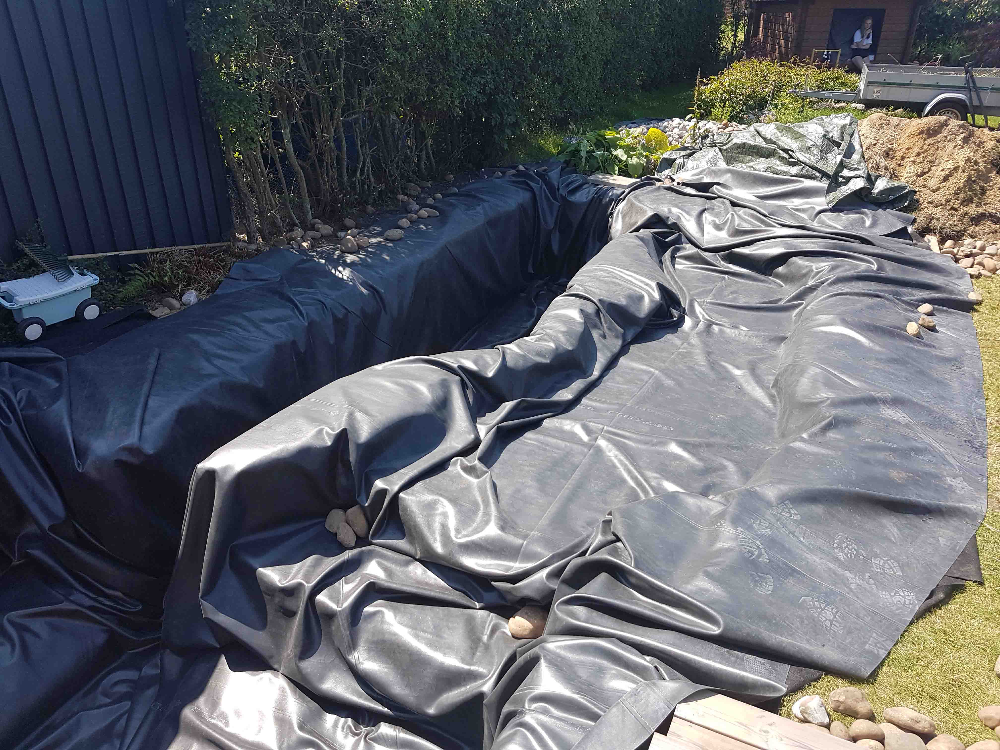
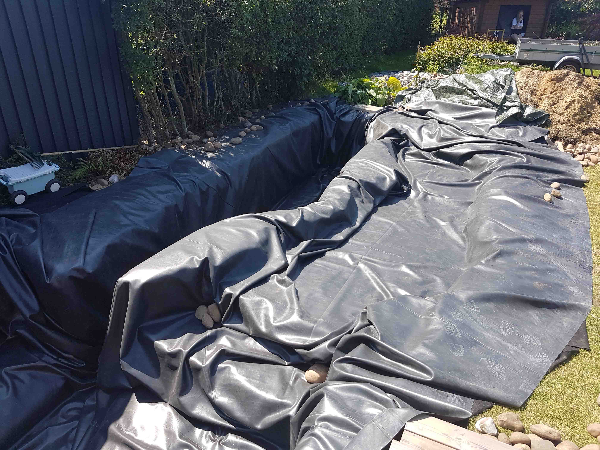

Jobsøgende Hvad søger jeg? → Udfordringer, erfaringer, oplevelser!
Jeg søger et studierelevant job, som kan udfordre mig, således jeg kan opnå ny erfaring, der i sammenspil med studiet, kan forbedre mine programmeringskundskaber.
Ydermere er jeg et meget socialt menneske, så at møde nogle nye kollegaer er et kæmpe plus!
Jobbet skal selvfølgelig være fleksibel med mit studie, men også gerne kunne tilbyde mere end et par timer om ugen.
Jeg er en 22 årig glad, ihærdig og særdeles teknologi interesseret ung mand. Jeg er i gang med mit 5. semester af min software ingeniør uddannelse på SDU, og mener derfor selv jeg er parat til at varetage et job ved siden af studiet, baseret på mine kompetencer og erfaring som studiet har givet mig.
Personligt er jeg et meget struktureret menneske, hvilket gør mig i stand til, at håndtere flere opgaver ad gangen, uden at miste overblikket. Derudover investerer jeg mig meget i de projekter jeg er involveret i, og lægger derfor mange tanker og tid bag mine beslutninger. Desuden ser jeg helst arbejdet bliver ført til døren, så ingen opgaver bliver glemt.
Jeg arbejder altid for at opnå det bedst mulige resultat, derfor bruger jeg ofte også min fritid på at sætte mig ind i tingene, således jeg kan bringe ny viden til jobbet, dette resulterer i en selvstændig og ansvarsbevidst medarbejder.
1. semester
Projekt kode Projekt rapport2. semester
Projekt kode Projekt rapport3. semester
Projekt kode (Client) Projekt kode (Server) Projekt rapport4. semester
Project kode Projekt rapport5. semester
Projekt kode Projekt rapport6. semester
Projekt kode Projekt rapportDet er ikke kun computere og software jeg interesserer mig for, jeg nyder særligt at være aktiv, få frisk luft, arbejde med hænderne og få sved på panden.
Derfor har jeg de seneste 2 somre, arbejdet hos min bror, hvor vi har arbejdet på hans havedams projekt.
Her har vi udgravet en 35 kubik liter havedam, ved hjælp af håndkraft og en minigraver. Derudover er der blevet lagt FiberTex og FiberDug i søen, samt faskiner, rør og pumper.
Pt. mangler der blot at blive lagt sten til bunden og væggene, og herefter påfyldning af vand.
Derefter skal vi til at være kreative med vandfald, omkring liggende sten, lys, tilbehør og selvfølgelig en bestand af fisk som indtil videre skal bestå af bl.a. japanske Koi.


 
